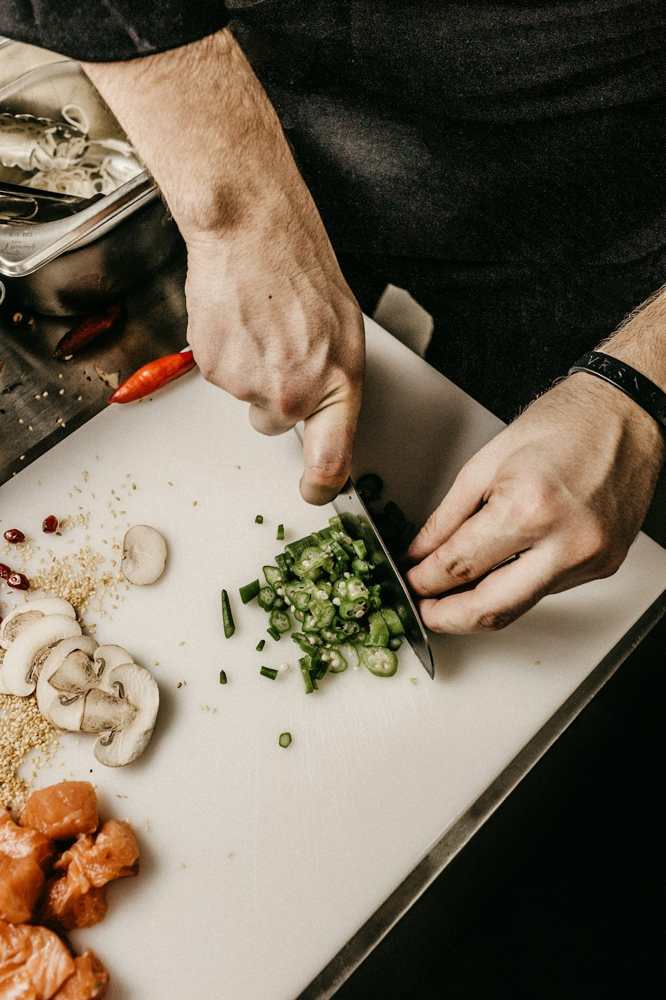

The Foundational Premise of Evening Noodle Gastronomy
For centuries, the noodle bowl has occupied a utilitarian corner of daily life — a rapid meal consumed between the bustle of daylight hours. At NoodleTable, our core premise was born from a simple yet radical proposition: what happens when noodles receive the same deliberate, unhurried reverence as classical fine dining?
Founded by master noodle artisans and food scientists, NoodleTable was established to celebrate the nocturnal hours. As dusk falls over the cast-iron streets of SoHo, our hearth springs to life. The pace slows, the lights soften, and our kitchen embarks on a choreographed evening tasting service designed to nourish both body and spirit.

The Three Pillars of Our Kitchen
1. Heirloom Stone-Milled Wheats
All noodles served in our dining room begin with traceable, non-GMO grain varieties sourced directly from small family grain mills. We select hard red spring wheats for their high tensile gluten matrix, alongside heritage soft wheats that contribute sweet, floral aromatics during mastication. Our doughs are never chemically bleached or artificially fortified.
2. Mineral-Calibrated Hydration Chemistry
Water constitutes nearly forty percent of fresh noodle dough and over ninety percent of our broths. Our kitchen utilizes reverse-osmosis filtration re-mineralized to 45 parts-per-million with natural magnesium and calcium ions. This exact ionic balance optimizes gluten strand formation during kneading while ensuring maximum extraction of amino acids during broth simmering.
3. Handcrafted Stoneware Ceramic Heat Vessels
A transcendent bowl of noodles cannot be separated from the vessel that holds it. We partner exclusively with local ceramic sculptors who hand-throw each stoneware bowl using heavy iron-rich clays. Fired at 1,280°C, these thick vessels store deep radiant heat, maintaining optimum soup temperature from the first bite to the final sip.